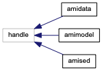
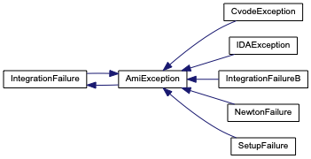
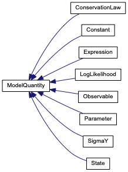
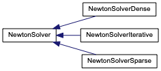
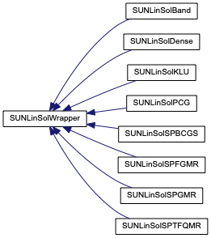
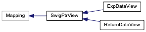

AMICI
Advanced Multilanguage Interface for CVODES and IDAS
Class Hierarchy
Go to the textual class hierarchy






Generated on Thu Feb 13 2020 17:51:22 for AMICI by
1.8.18
 1.8.18 1.8.18
1.8.18 1.8.18